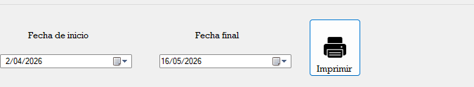

El Balance de Antigüedad es una herramienta que permite analizar la antigüedad de las cuentas por cobrar o por pagar. A continuación, se describen los pasos para generar un Balance de Antigüedad:
Se elige la fecha de inicio y la fecha de fin del período a analizar.

Se selecciona el botón de imprimir.